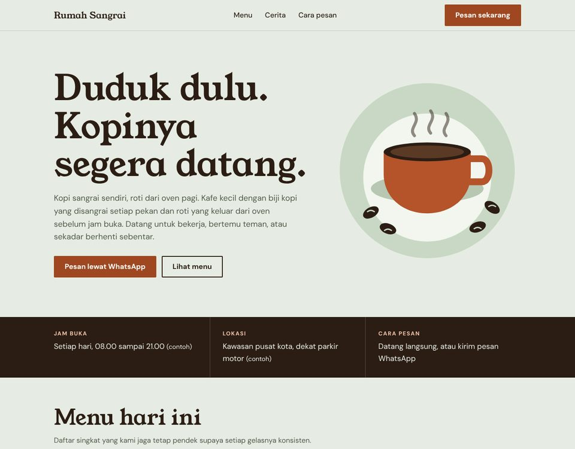
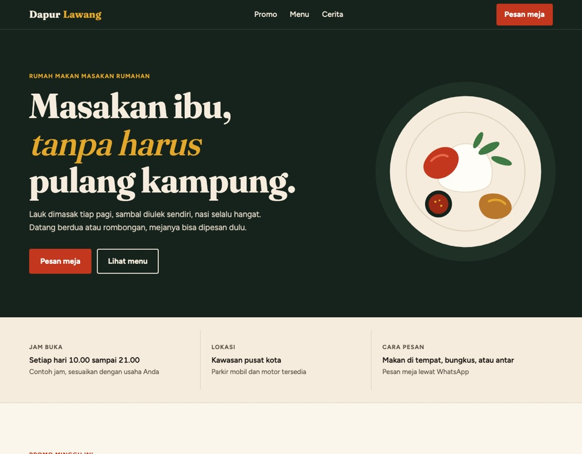
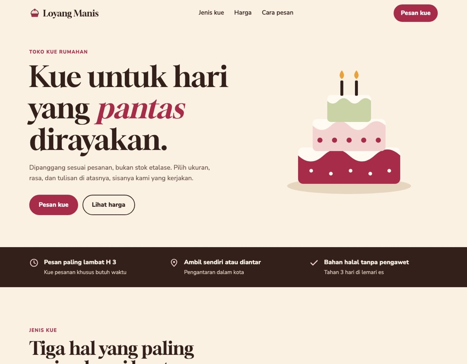
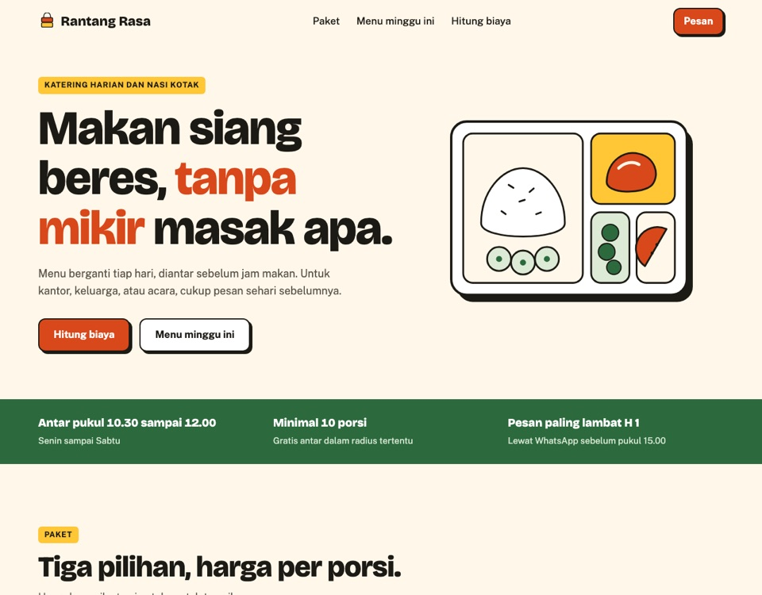
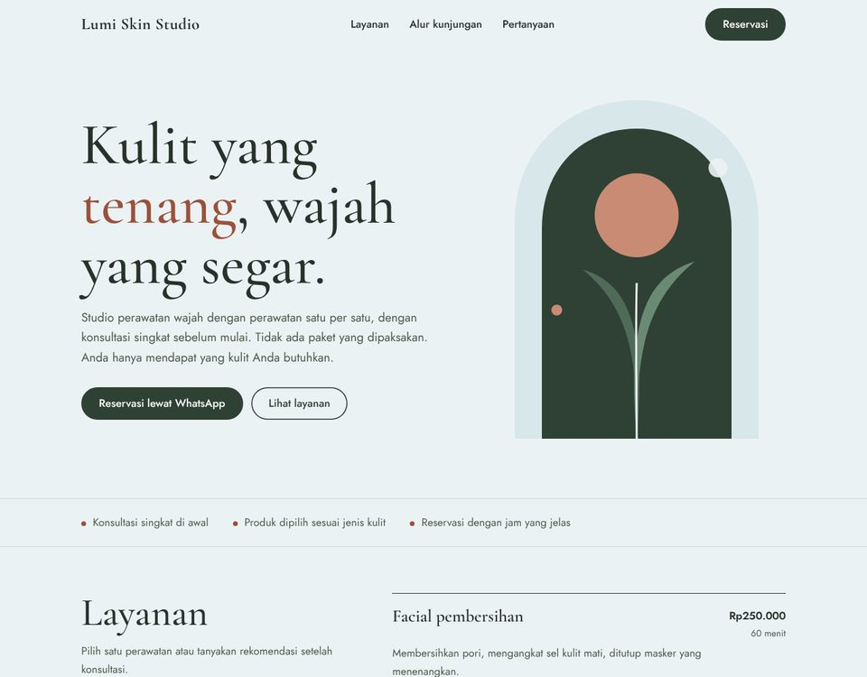
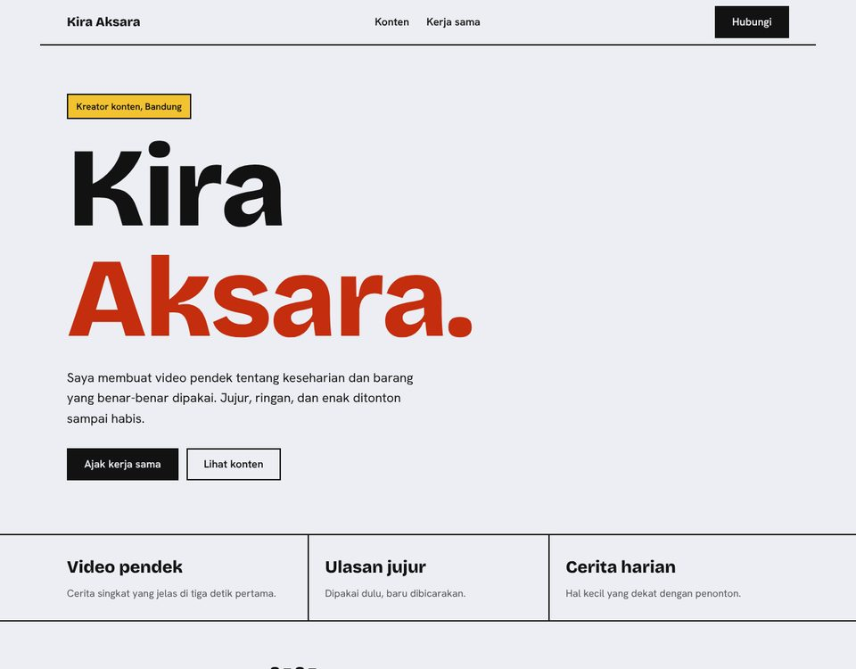
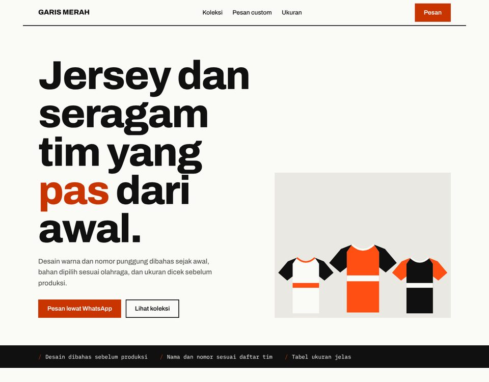

Menu berharga, info jam buka, pesan lewat WhatsApp.
Buka demoTujuh arah desain dasar untuk demo per niche. Tiap template dipersonalisasi lagi untuk target sebelum dikirim. Template bermotion: tambahkan ?static di akhir link untuk tampilan tanpa animasi, misalnya untuk screenshot.

Menu berharga, info jam buka, pesan lewat WhatsApp.
Buka demo
Promo mingguan, menu dengan saringan kategori, pesan meja.
Buka demo
Jenis kue, tabel harga per ukuran, langkah pesan, formulir pesanan.
Buka demo
Tiga paket, menu mingguan, kalkulator biaya, tanya jawab.
Buka demo
Daftar layanan, alur kunjungan, tanya jawab, reservasi.
Buka demo
Profil, konten pilihan, format kerja sama, tombol hubungi.
Buka demo
Koleksi, alur pesan custom, tabel ukuran.
Buka demo